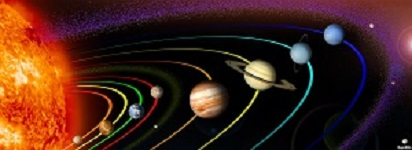

Our Solar System

The Solar System is a system of the Sun and planets that go around the Sun. There are 8 planets: 4 gas and ice giants (the largest planets), and 4 terrestrial planets. A terrestrial planet is a planet with a rocky body. There are also an unknown amount of dwarf planets and small Solar System bodies. The Solar System was formed 4.6 billion years ago caused by the Big Bang. It is part of a galaxy known as the Milky Way. The biggest star is the Sun.